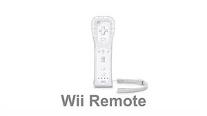
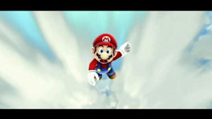
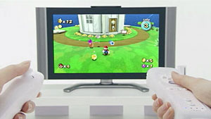
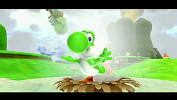
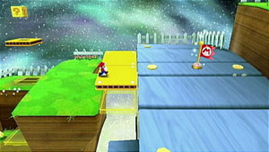
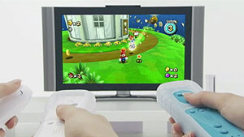
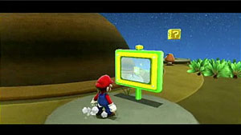

How To – Basics
Getting Started
New to Mario games? These tutorials will help you get your footing.

Controlling Mario
Need to know where all the buttons are? Let us show you.
Playing the Game
These are the basic moves you'll need when travelling around the galaxy.

Pointing at the Screen
Sometimes a simple point of the Wii Remote works wonders. See how!

Riding Yoshi
Your green friend Yoshi has plenty of great moves. Learn how to use them!

Useful Actions
Here are some moves that will come in handy once you've got the basics down.

Co-Star Mode
See what you can do with a friend or family member, and a second Wii Remote! (Additional Wii Remote required. Sold separately.)

What to Do If You Get Stuck
The Tip Network and the Cosmic Spirit will be around to help. Learn about them here.
